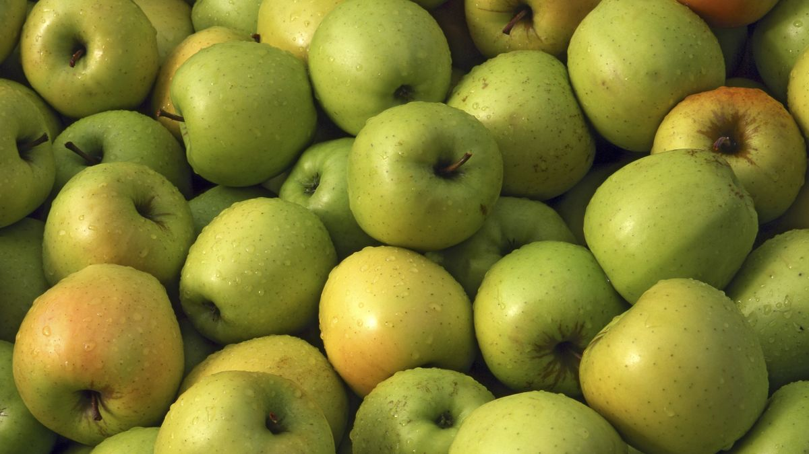

Productos Cargados
Lacteos
Nombre: Batido de cacao
Cantidad: 180 ml
Leche semidesnatada (90%), azúcar, cacao desgrasado en polvo (1,6%), leche desnatada en polvo, espesantes (celulosa, goma de celulosa, carragenanos, goma xantana), caramelo (azúcar y jarabe de glucosa caramelizados, agua), aromas, canela, corrector de acidez (hidróxido de sodio), vitamina D. Puede contener huevo.
Precio: 1.45€
Nombre: Leche desnatada
Cantidad: 1,5 l
Leche desnatada
Leche frita
Leite fritida a galega, para preparar este dulce tan tradicional y casero no necesitamos unos ingredientes especiales, nos basta con los de andar por casa, por eso es uno de los unos de los postres sencillos con más éxito en la repostería española."
Torrijas de leche
Esta receta original, y a la vez tradicional, del dulce más típico en Semana Santa es un postre que está basado en una rebanada de pan empapada en leche, rebozada en huevo, frita en aceite de oliva virgen extra y aromatizada al gusto con almíbar o, en este caso, azúcar y canela"
Precio: 1.39€
Frutas
Nombre: Manzana Golden
Cantidad: 1,5 kg
Manzana muy nutritiva, muy rica en fibra, ayuda al sistema digestivo a limpiarse
tarta de manzana
Dentro de las recetas de postres uno de sus básicos por excelencia es la tarta de manzana en hojaldre. Aunque existen múltiples variantes, quizá la más clásica sea la tarta de manzana con crema pastelera. La crema pastelera preparada en casa es uno de los secretos del éxito de cualquier postre, y acompañada de manzanas la combinación perfecta."
Precio: 1.88€
Bebida
Nombre: Green Cola
Cantidad: 1,5 l
Agua, dióxido de carbono, color: Sulphite Ammonia Caramel, acidulantes: ácido tartárico y ácido málico, edulcorantes: esteviol glucósidos y sucralosa, saborizantes naturales, cafeína natural.

Precio: 1.55€
Nombre: Fanta naranja pack 2 botellas
Cantidad: 2 l
Agua carbonatada, 8% zumo de naranja a partir de concentrado, azúcar, acidulantes: ácido cítrico (E-330) y ácido málico (E-296) , estabilizantes: goma arábiga (E-414), acetato isobutirato de sacarosa (E-444) y ésteres glicéridos de colofonia de madera (E-445), edulcorantes: acesulfamo K (E-950), aspartamo y neohesperidina DC (E-959), conservador sorbato potásico (E-202), corrector de acidez citrato sódico, aromas naturales de naranja y otros aromas naturales, antioxidante ácido ascórbico (E-300) y colorante carotenos (E-160a). Contiene una fuente de fenilalanina
Precio: 2.82€
Cereal
Nombre: Harina de trigo
Cantidad: 1 kg
Harina de trigo. Contiene gluten
Pan
Es fácil y muy rápido, no requiere de ningún tipo especial de harina y no necesita levados. Desde que comenzamos con la receta hasta que sacamos el pan del horno no transcurre más de una hora, algo muy de agradecer en momentos de apuro."

Precio: 0.72€
Nombre: Choco Krispies Kellogg's
Cantidad: 450 g
Arroz, Azúcar, Cacao desgrasado en polvo, Maltodextrina, Pasta de cacao, Sal, Aroma de malta de CEBADA, Aroma, Aroma natural. Vitaminas y Minerales: Niacina, Hierro, Vitamina B6, Riboflavina (B2), Tiamina (B1), Ácido fólico, Vitamina D, Vitamina B12
Precio: 2.95€